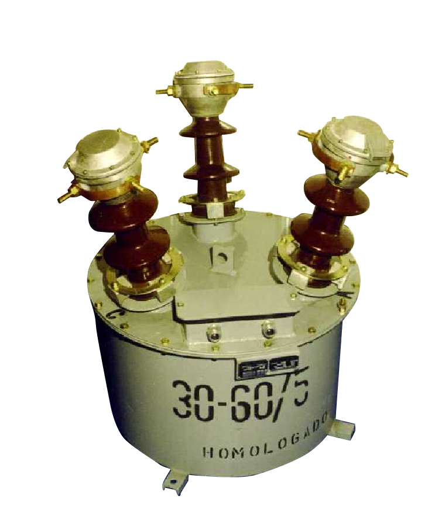

BLOQUES DE MEDICION EN ACEITE MINERAL, HERMETICOS
Características Técnicas Principales:
- Nuestros Bloques de Medición para Media Tensión, están destinados a medir y controlar Puestos de Transformación Intemperie y Subestaciones.
- El sistema constructivo, en aceite hermético, les permite soportar grandes esfuerzos electrodinámicos y descargas atmosféricas sin alteraciones, lo que garantiza una larga vida útil manteniendo sus características originarias. Su utilización es ideal para zonas de temperaturas extremas.
- Nuestra línea de fabricación cuenta con homologación del INTI y del L.A.T. de la Universidad de La Plata. Se construyen para tensiones de hasta 33 kV.
- El Bloque de Medición Trifásico está constituido por tres transformadores de tensión fase-tierra, conectados en estrella, con neutro rígido a tierra, y transformadores de intensidad, uno por cada fase.
- Los seis transformadores están conectados entre sí y sumergidos en aceite.
- Los circuitos magnéticos, construidos acorde a las características de cada tipo de transformador, sean TI o TV, se fabrican con chapa silicio de grano orientado de alta calidad y baja pérdida, tratada térmicamente conforme a normas preestablecidas para otorgarles gran confiabilidad en la precisión de clase y exactitud de potencia. Sobre ellos se bobinan los respectivos arrollamientos secundarios y primarios.
- Las aislaciones se realizan con papeles especiales y el conjunto está secado al vacío e impregnado con aceite aislante.
- Los campos eléctricos han sido calculados y construidos cuidadosamente bajo la morfología más adecuada a las tensiones en juego para, a su vez, neutralizar los efectos ferroresonantes.
- La cuba y las tapas son construidas en chapa de acero y están pintadas interior y exteriormente con antióxido y esmalte sintético del tipo epoxídico.
- Sobre la tapa van montados los tres aisladores de MT, cada uno con los bornes de entrada y salida correspondientes a los tres transformadores de tensión y a los tres transformadores de corriente. También se encuentra sobre la misma una caja de bornes donde van alojados los secundarios de los seis transformadores.
- En la parte superior de cada una de las cabezas de los aisladores de MT, un diafragma compensa las variaciones de presión por temperatura, para evitar sobrepresiones en el interior del aparato y asegurar su hermeticidad.
- Para su verificación el equipo es probado finalmente con una sobrepresión de 1 Kg/cm² durante 24 horas.
- Bajo las condiciones de estanqueidad logradas y dada la baja temperatura de trabajo, el aceite mantiene sus condiciones originales, por lo cual no se hace necesario un control periódico.
- Todos los equipos se construyen de acuerdo a normas IEC e IRAM.

Se les realizan ensayos de:
- Tensión Aplicada en MT
- Tensión Aplicada en BT
- Tensión Inducida en MT
- Tensión Inducida en BT
- Relación
- Exactitud de Clase
- Descargas Parciales
- Hermeticidad
- Aislación
- Rigidez Dieléctrica
- Factor de Sobreintensidad
- Calentamiento
Fábrica y Ventas
Ventas - Oficinas Buenos Aires
Av Boyacá 168. (1406) Capital Federal. Argentina
Tel +54 9 11 5180 0653
Tel +54 9 11 4631 9805
mail: lorente@fibertel.com.ar